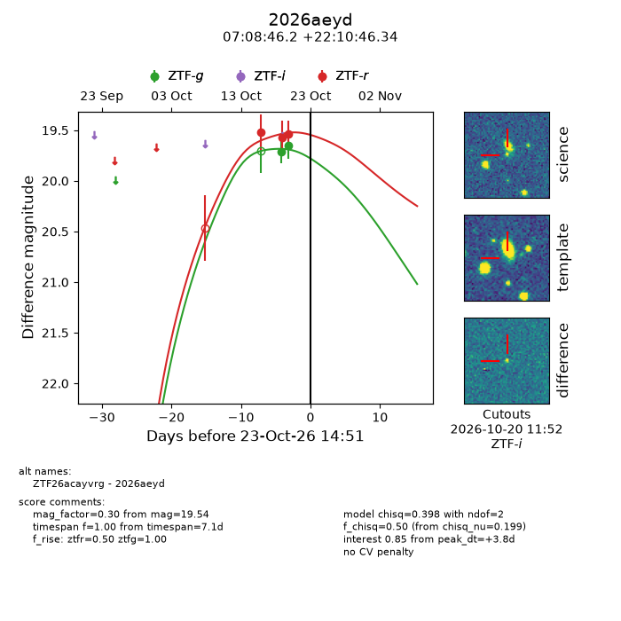
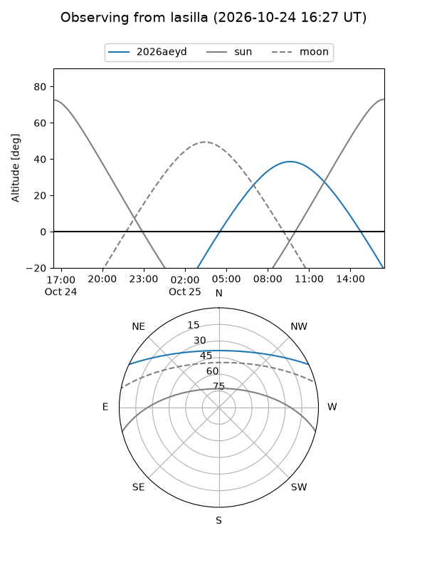
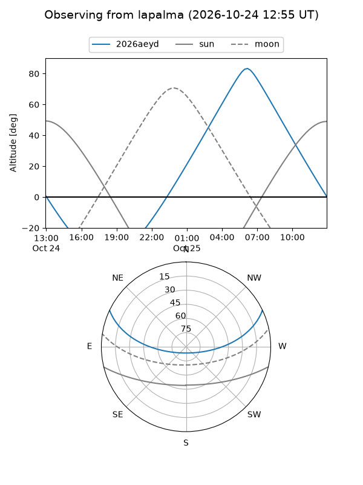
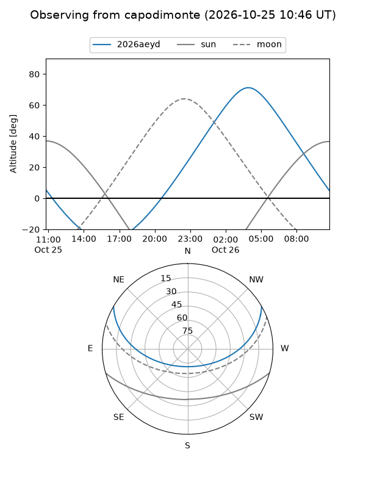
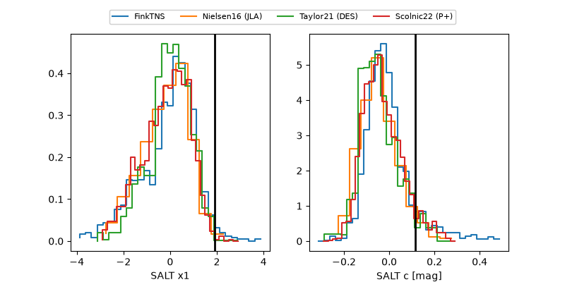

2026aeyd
Target 2026aeyd at 2026-10-23 14:54
Aliases and brokers:
FINK-ZTF: ztf.fink-portal.org/ZTF26acayvrg
Lasair-ZTF: lasair-ztf.lsst.ac.uk/objects/ZTF26acayvrg
ALeRCE-ZTF: alerce.online/object/ZTF26acayvrg
YSE-PZ: ziggy.ucolick.org/yse/transient_detail/2026aeyd
TNS name: wis-tns.org/object/2026aeyd
Direct TNS query: direct search
alt names
ZTF26acayvrg (ztf,fink_ztf)
2026aeyd (tns,yse)
Coordinates:
equatorial (ra, dec) = 107.1926,+22.17954
equatorial (HMS+DMS) = 07:08:46.23,+22:10:46.34
galactic (l, b) = (194.7044,+13.55663)
Flags:
peak dt: +3.8
Photometry:
last ztfg=19.65, ztfr=19.54
2 ztfg, 3 ztfr detections
Lightcurve

Visibility



Additional plots
